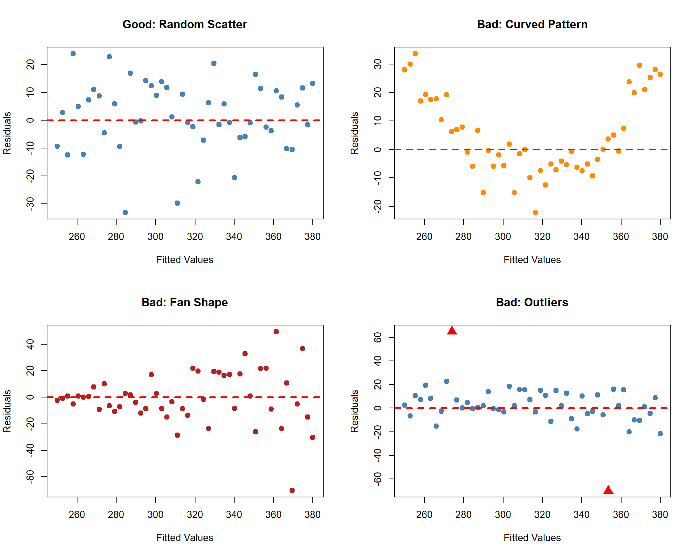
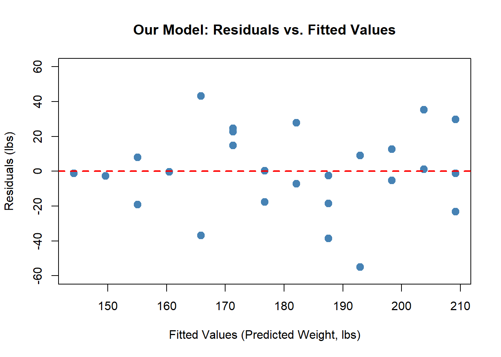
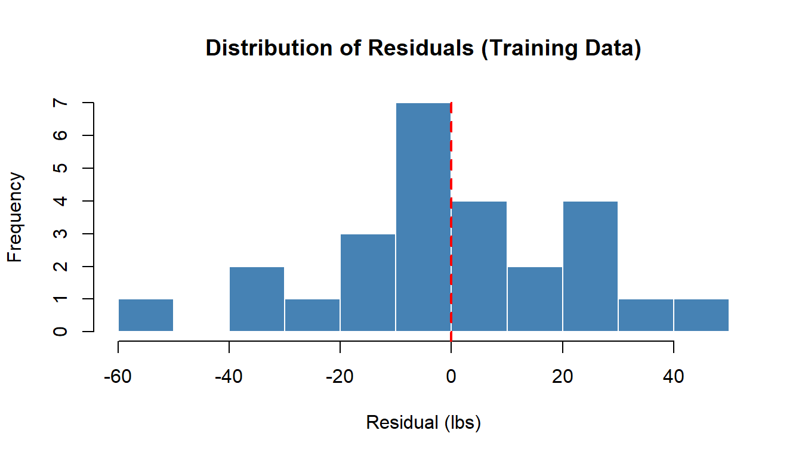
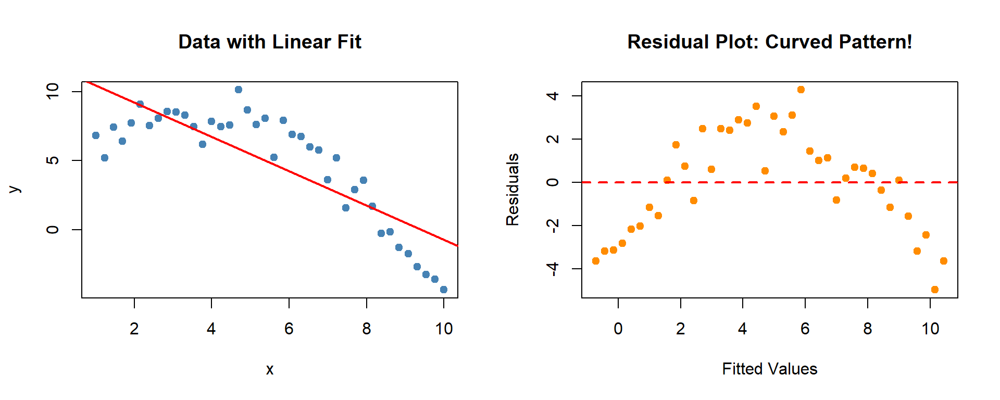

Analysis of Residuals
MA153X Mathematical Modeling — Lesson 10
Lesson 10: Analysis of Residuals
NoteDownloads
Objectives
- Define and compute residuals for a linear regression model and interpret them as prediction errors in context.
- Construct and interpret residual plots (residuals vs. fitted values) to assess whether linear regression assumptions are reasonable.
- Analyze the distribution of residuals using summary statistics and plots to evaluate model fit and error behavior.
- Evaluate whether a linear regression model is appropriate for decision-making based on diagnostic evidence.
Review: Where We Are
In Lessons 8–9, we built a regression model on 26 training soldiers, validated it on 11 test soldiers, and compared MAE. We have evidence the model generalizes.
But is a linear model actually the right choice? Maybe the relationship is curved and we just can’t see it from the scatter plot alone. This is what residual analysis tells us.
What is a Residual?
Recall from Lesson 9: every time we make a prediction, there is an error — the difference between what actually happened and what the model predicted. That error is called a residual:
\[e_i = y_i - \hat{y}_i\]
- Positive residual (\(e_i > 0\)): The model underpredicted — the actual value was higher.
- Negative residual (\(e_i < 0\)): The model overpredicted — the actual value was lower.
Looking at any single residual isn’t very informative. What matters is the pattern across all residuals. If the residuals behave like random noise — no patterns, no trends — our assumptions were reasonable. If we see structure, we have a problem (Reading 2.3, Section 1).
What Does a Good Residual Plot Look Like?
A residual plot graphs the residuals (\(e_i = y_i - \hat{y}_i\)) against the fitted values (\(\hat{y}_i\)), with a reference line at \(e = 0\).
If our assumptions are met, the residual plot should show a horizontal band of points scattered randomly around zero — no pattern, no trends, roughly even spread (Reading 2.3, Section 4).
What to Look For When Things Go Wrong
The reading describes three problems that show up in residual plots. Here is what each one looks like:
ImportantReading a Residual Plot (Reading 2.3, Section 4)
| What You See | What It Means | Which Assumption Is Violated |
|---|---|---|
| Random scatter around zero | Model is appropriate | None — assumptions satisfied |
| Curved pattern (U-shape or arch) | Relationship is nonlinear | Linearity |
| Fan shape (spread increases or decreases) | Errors are systematically larger for some predictions | Constant variance |
| Large isolated points far from zero | Potential outliers — investigate before proceeding | May indicate model issues |
Our Model’s Residual Plot
Now let’s look at the residual plot for our ACFT model. Does it pass the test?

TipCritique: What Do You See?
- Curved pattern? No — the points don’t follow a U-shape or arch. Linearity assumption looks reasonable.
- Fan shape? The spread looks roughly constant across the range of fitted values. Constant variance looks okay.
- Outliers? There are a couple of larger residuals, but nothing dramatically far from the rest.
- Overall: Random scatter around zero. The linear model appears appropriate for this data.
Distribution of Residuals
Beyond the residual plot, we check whether the residuals are roughly symmetric around zero (Reading 2.3, Section 6). This relates to the normality assumption.

TipCritique: What Do You See?
- Centered near zero? Yes — the distribution is roughly centered on the red dashed line.
- Roughly symmetric? Reasonably so — no severe skew in one direction.
- Extreme outliers? No residuals are dramatically far from the rest.
The normality assumption appears reasonable.
The standard deviation of residuals (\(s_e\)) tells us the typical size of a prediction error:
\[s_e = 24.09 \text{ lbs}\]
This means a typical prediction is off by about 24.09 lbs in either direction.
Connecting It All to the Four Assumptions
ImportantResidual Analysis Summary
| Assumption | What We Checked | Verdict |
|---|---|---|
| Linearity | Residual plot: no curved pattern | Reasonable |
| Independence | Study design — each soldier measured once | Reasonable |
| Constant variance | Residual plot: no fan shape | Reasonable |
| Normality | Histogram: roughly symmetric around zero | Reasonable |
All four assumptions appear reasonable for our model. Combined with the validation results from Lesson 9 (similar training and test MAE), we have strong evidence that the linear model is appropriate for this data.
Example: A Model That Fails
What happens when we try to force a linear model on nonlinear data?

The scatter plot on the left might look “okay” at first glance. But the residual plot reveals a clear curved pattern — the model systematically overpredicts in the middle and underpredicts at the ends. The linearity assumption is violated. A nonlinear model would be more appropriate (Lesson 11).
This is why we never skip residual analysis — the residual plot catches problems the scatter plot might hide.
Now Let’s Do It in Excel
Open the L10 - Residuals tab in the workbook:
NoteStep 1: Compute Fitted Values and Residuals
Use your slope and intercept from L9 (training model):
- Fitted column:
= intercept_cell + slope_cell * height_cell - Residual column:
= actual_weight - fitted_value
Drag both formulas down for all 26 training soldiers.
NoteStep 2: Create a Residual Plot
- Select the Fitted column and Residual column.
- Go to Insert -> Chart -> XY (Scatter).
- Adjust the axis bounds so the data fills the chart.
- Add a horizontal reference line at \(e = 0\):
- Add a new data series with two points: (min fitted, 0) and (max fitted, 0).
- Format this series as a dashed line with no markers.
- Label axes: “Fitted Values” on x-axis, “Residuals” on y-axis.
NoteStep 3: Create a Histogram of Residuals
- Select the Residual column.
- Go to Insert -> Chart -> Histogram.
- Check: Is the distribution roughly symmetric around zero?
NoteStep 4: Critique Your Plots
Look at your residual plot and histogram and answer:
- Do you see a curved pattern? (linearity concern)
- Do you see a fan shape? (constant variance concern)
- Are there any outliers? (unusually large residuals)
- Is the histogram roughly symmetric around zero? (normality)
- Based on all evidence (Lessons 8–10), is this model appropriate for predicting soldier weight?
Summary
ImportantKey Takeaways
- Residuals (\(e_i = y_i - \hat{y}_i\)) are prediction errors. They are evidence for whether our model assumptions hold.
- A residual plot (fitted values vs. residuals) is the primary diagnostic:
- Random scatter = assumptions satisfied
- Curved pattern = linearity violated
- Fan shape = constant variance violated
- Outliers = investigate
- A histogram of residuals checks the normality assumption: look for roughly symmetric distribution around zero.
- \(s_e\) measures the typical prediction error in the same units as \(y\).
- A model can have good \(R^2\) and MAE and still fail residual analysis. Always check before using a model for decisions.